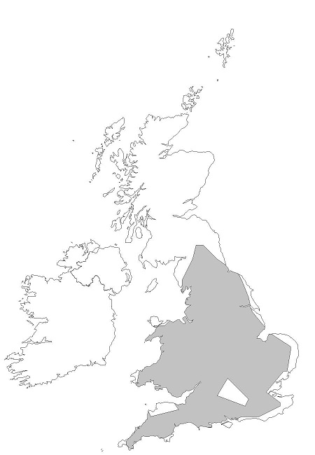

Brandt's bat is very similar to whiskered bat and the two species were only separated in 1970. Both are small species with somewhat shaggy fur - the Brandt's bat is slightly larger than the whiskered bat. The two species are most reliably separated by differences larger than the whiskered bat. The two species are most reliably separated by differences in dentition and penis shape. Other distinguishing features are thought to include tragus in dentition and penis shape. Other distinguishing features are thought to include tragus shape and claw length.
| Head & body length: | 38mm - 50mm |
|---|---|
| Forearm length: | 31mm - 39mm |
| Wingspan: | 210mm - 240mm |
| Weight: | 4.5g - 9.5g |
| Colour: | Fur dark grey or brown, golden tips on back, greyish underneath. Face and base of ears often pinkish |
Brandt's bats are regularly found in buildings, though colonies are more commonly found in the north and west. They are found in all types of houses including some modern ones, but particularly in older buildings with stone walls and slate roofs. It is a crevice dweller, often roosting until hanging tiles, above soffits, in cavity walls and under ridge tiles.
Droppings frequently accumulate in the roof below the ridge and especially below the favoured roost sites, but not particularly at gable ends or on chimneys. Colonies of Brandt's and whiskered bats may use separate parts of the same roof and may also roost with pipistrelles or longeared bats. They do roost in trees and churches, and have been known to use bat boxes
In winter Brandt's bats are regularly found hibernating in caves and tunnels, almost always in small numbers - it is uncertain where the majority of them hibernate. They often lodge in tight crevices and can be found among clusters of other species. Males may stay at the hibernation sites until well into May.
Mating usually takes place in autumn, but has been observed in all winter months. Adult females form maternity colonies in the summer, giving birth to their single young in June or early July. The baby is fed solely on its mother's milk: by three weeks it can fly and by six weeks it can forage for itself.
Some females reach sexual maturity at three months (in their first autumn) but the majority do not mate until their second autumn
Brandt's bats echolocate between 33kHz and 89kHz, sounding loudest at 45kHz. Their calls sound like dry clicks (similar to Daubenton's but not as regular and often slower); they are sometimes mistaken for pipistrelles but their frequency range is much wider.

Brandt's bat is thought to be slightly less common and widespread than the whiskered bat. It is found throughout England and Wales and has only recently been recorded in Ireland as well.
They are vulnerable to the effects of modern agricultural practices and decline of woodland, which result in loss of suitable feeding habitats and hollow trees for roosting. They are susceptible to pesticides, especially those used as remedial timber treatment chemicals. Disturbance and vandalism of their hibernation sites (caves and tunnels) is an additional threat.